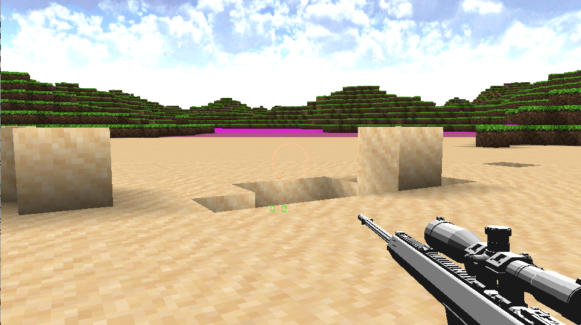

ChunFengTsin

Hello,
when I add shooter to the scene, I have a question about collision detection.
Before , there are no physics in scene , I adjust the position and rotation of character by simple calculation.
And hit cube by Ray-cast from camera.
But now I want to shoots bullets, how I to detection the collision between bullet and other character.
Do I have to use physics component ?